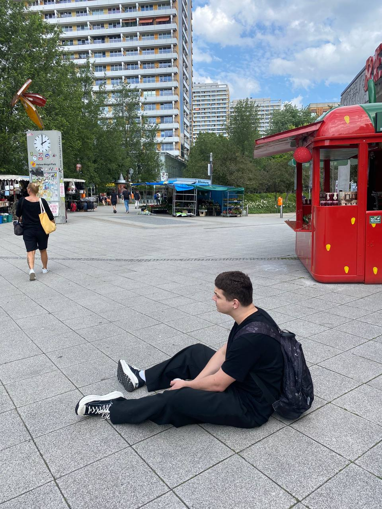

15.08.2005 Донецьк
Донецький Ліцей "Інтелект"
Моє улюблене місто - Берлін. Це місто вражає своєю історією, культурними пам'ятками і сучасною архітектурою. Тут є багато музеїв, парків та місць для відпочинку. Берлін завжди надихає на нові ідеї та відкриття.
Більше інформації про Берлін можна знайти на офіційному сайті міста.